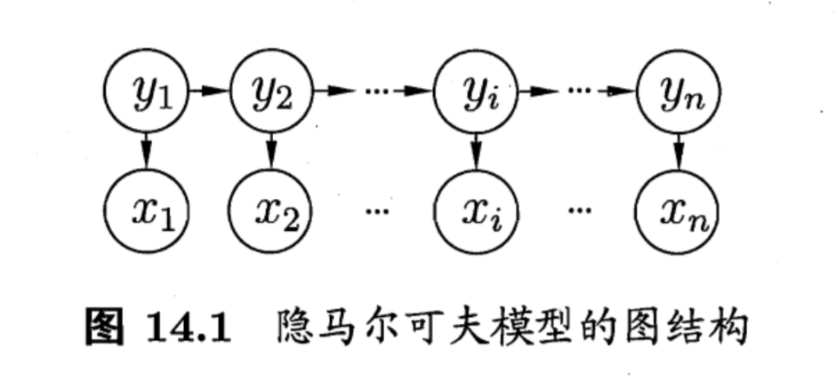
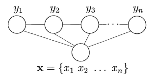

读懂西瓜书 14 : 概率图模型
马尔可夫性
本章最重要的概念就是马尔可夫性. 马尔可夫性是指变量的状态只与其前一个时刻的状态有关, 而与其他的状态无关, 称为 “无后效性” . 这里可以作一个拓展, 即指变量的状态只与其周围的变量状态有关, 这里的 ‘周围’ 既可以是时间也可以是空间.
隐马尔可夫模型
隐马尔可夫模型包括两条链, 一条是由可观测的状态组成的, 一条是由不可观测的状态 (隐变量) 组成的. 那么究竟是什么呢, 我们举个例子.
假设每天的天气只与前一天的天气有关. 比如今天如果是晴天, 那么明天有 $70%$ 的可能还是晴天, 有 $30%$ 的可能是阴天. 如果今天是阴天, 那么明天有 $50%$ 的可能是晴天, 有 $50%$ 的可能还是阴天. 一天只能有一种天气, 所以我们每天都能观测到一种天气, 这是可观测的. 比如经过一个星期, 我们得到了天气关于时间的一个序列
| 1 | 2 | 3 | 4 | 5 | 6 | 7 |
|---|---|---|---|---|---|---|
| 晴 | 晴 | 晴 | 阴 | 阴 | 晴 | 晴 |
现在假设你有个朋友在国外, 你想要知道他们那边的天气, 但是你只了解你的朋友是在家里还是外出, 并不知道具体天气如何, 而且你还知道假如是晴天, 那么他有 $70%$ 的可能出去, 有 $30%$ 的可能呆在家, 如果是阴天, 那么有 $10%$ 的可能出去, 有 $90%$ 的可能呆在家. 假如又过了一个星期, 虽然这个星期里的天气是确实存在的, 可是你并不知道, 这就是那条由隐变量组成的 “隐链” . 你的朋友的状态和天气有关, 你也了解你的朋友的状态, 那么朋友这一个星期里的状态也构成一天链, 这就是由可观测的状态组成的 “明链” .
| 1 | 2 | 3 | 4 | 5 | 6 | 7 |
|---|---|---|---|---|---|---|
| 出去 | 在家 | 晴 | 在家 | 在家 | 在家 | 出去 |
明链和暗链结合在一起, 就有了隐马尔可夫模型.

以上面的例子来说明. $y_i$ 就是第 $i$ 天的天气, $x_i$ 是你朋友第 $i$ 天的活动. 而状态转移概率 $\boldsymbol A$ 为
$$
\left[\begin{matrix}
0.7&0.3\\
0.5&0.5
\end{matrix}\right]
$$
输出观测概率 $\boldsymbol{B}$ 为
$$
\left[\begin{matrix}
0.7&0.3\\
0.1&0.9
\end{matrix}\right]
$$
初始状态概率 $\boldsymbol{\pi}$ 为
$$
\left[\begin{matrix}
1\\0
\end{matrix}\right]
$$
产生观测序列 ${x_1, x_2, \dots}$ 的过程书上已经有了, 这里不再详细叙述.
当然, 一个确定的模型并不一定能产生确定的结果, 上面的例子只是一种可能结果, 还有其他很多种结果, 出现的概率各不相同.
而隐马尔可夫模型的三个基本问题我们也用例子来说一下:
- 即我们得到了朋友这一个星期的状态, 那么给定模型 $\lambda = [\boldsymbol{A},\boldsymbol{B} , \boldsymbol{\pi}]$ , 计算出出现这个状态的概率.
- 给定模型 $\lambda = [\boldsymbol{A},\boldsymbol{B} , \boldsymbol{\pi}]$ 以及朋友这个星期的状态, 那么推测出这个星期朋友那里的天气是怎样的.
- 给出朋友这个星期的状态, 如何调整参数 $\lambda$ 才能使朋友出现这样的状态的可能性最大.
马尔可夫随机场
Hammersley-Clifford 定理
$\textrm{Hammersley-Clifford}$ 定理指出概率无向图模型的联合概率可以分解为定义在极大团上的势函数的乘积. 即
$$
P(\boldsymbol{\mathrm{x}}) = \frac{1}{Z}\prod_{Q\in \mathcal{C}}\psi_Q(\boldsymbol{\mathrm{x}}_Q)\\
$$
定理充分性的证明在西瓜书中其实已经给出. (即西瓜书中所说的简单的验证)
极大团
若在一个团中加入另外任何一个节点都不再写成团, 则称该团为 “极大团” (maximal); 换言之, 极大团就是不能被其他团所包含的团.
换句话讲就是, 找不到这个团之外的一个结点和这个团中所有结点之间都有边, 那么这个团就是极大团. 可以利用反证法证明: 如果极大团被其他团所包含, 那么根据团的定义, 这个极大团之外还会有一个结点 (该结点在这个极大团之外却在那个包含这个极大团的团之内) 与团中所有节点都有边, 违背了极大团的定义, 因此不成立.
势函数
势函数从何而来, 为什么是这样定义? 相信你一开始也和我一脸懵逼. 现在我试着将我所理解的势函数尽我所能表达出来.
势函数本身用来刻画某种 ‘偏好’ . 即你依靠经验认为结点之间应该有某种关系. 比如说你如果认为结点之间的值应该要差不多, 那么当它们的值确实差不多时, 你应该给出更高的分数, 如果他们的值相差较大, 你就应该给出更低的分数. 依靠这样的准则, 就可以构造出一个势函数, 来实现你的给分策略. 势函数的形式不是唯一的, 只不过常用指数函数来定义势函数. 使用指数函数的目的是为了满足非负性 (概率总不可能是负的吧) .
至于势函数和后面提到的特征函数到底有什么根本上的区别… 好吧我也不清楚.
规范化因子
$$
P(\boldsymbol{\mathrm{x}}) = \frac{1}{Z}\prod_{Q\in \mathcal{C}}\psi_Q(\boldsymbol{\mathrm{x}}_Q)\\
$$
其中 $Z = \sum_\boldsymbol{\mathrm{x}}\prod_{Q\in\mathcal{C}}\psi_Q(\boldsymbol{\mathrm{x}}_Q)$ 是规范化因子, 那么它究竟起到什么作用呢? 其实它起到的作用就是保证 $\sum_\boldsymbol{\mathrm{x}}P(\boldsymbol{\mathrm x}) = 1$ , 即保证我们算出的是一个 “概率” . 而概率具有的性质就是所有可能结果的概率和为 $1$ .
**马尔可夫性
事实上, 这些 ‘**马尔可夫性’ 成立的前提都在于某个变量只与其相邻变量有关.
全局马尔可夫性
简单的来说, 就是两 ‘团’ 变量被中间的 ‘变量墙’ 隔开, 因此具有独立性.
局部马尔可夫性
可以形象的认为 $n^*(v)$ 像一圈围墙将 $v$ 包围了起来, 这堵墙存在时 (变量给定时) , 会将 $v$ 与外界分离 (即独立于外界) .
这里说明一个可能不太清楚的点.
令 $V$ 为图的结点集, $n(v)$ 为结点 $v$ 在图上的邻接结点, $n^*(v) = n(v) \cup {v}$ , 有 $\boldsymbol{\mathrm{x}}v \perp \boldsymbol{\mathrm{x}}{V\backslash n^*(v)}$ .
这里的 $\boldsymbol{\mathrm{x}}_{V\backslash n^*(v)}$ 中的 $V\backslash n^*(v)$ 应该是集合 $V$ 去除 $n^*(v)$ 集合. 所有的 $A\backslash B$ 运算都是集合 $A$ 去掉其中的集合 $B$ 部分.
成对马尔可夫性
只要两个变量不在同一条边上, 那么就可以将这两个变量完全用其他结点隔离开, 最极端的情况就是把除了这两个变量的节点都当成 ‘墙’ , 这两个变量的周围都是 ‘墙’ , 被这堵墙隔开后, 它们就具有独立性. 这就是成对马尔可夫性. 如果这两个变量在同一条边上, 那么无论是多厚的墙, 两个变量间还是有一条绳子 (边) 连着, 他们仍然不会分离, 不具有成对马尔可夫性.
条件随机场
条件随机场与隐马尔可夫模型、马尔可夫随机场的最主要区别在于条件随机场是判别式模型, 而隐马尔可夫模型和马尔科夫随机场是生成式模型. 顾名思义, 条件随机场就是有 ‘条件’ 的 马尔可夫 ‘随机场’ . 同样基于最大团定义了势函数, 只不过还多引入了一个特征函数.
条件随机场的结构是任意的. 但是一般我们会考虑 “链式条件随机场” ($\mathrm{chain-structured;CRF}$).

特征函数
特征函数刻画了相邻变量之间的相关关系以及观测序列对它们的影响.
学习与推断
变量消去
变量消去一般用来求边缘概率 (可以理解为求和的过程可以一个个的 ‘消去’ 变量, 故为变量消去). 如果进行暴力求和来求边缘概率, 那么时间复杂度会达到可怕的 $O(N^T)$ , 其中 $N$ 是变量可能的取值数, $T$ 是要消去变量的总数. 这个复杂度可以说是基本上不可能进行求解的, 但好在我们有更快的算法, 那就是动态规划.
动态规划
$$
\begin{aligned}
P(x_5) &= \sum_{x_4}\sum_{x_3}\sum_{x_2}\sum_{x_1}P(x_1, x_2, x_3, x_4)\\
&=\sum_{x_4}\sum_{x_3}\sum_{x_2}\sum_{x_1}P(x_1)P(x_2\mid x_1)P(x_3 \mid x_2)P(x_4 \mid x_3)P(x_5\mid x_3)
\end{aligned}
$$
上式可以等价的表达为
$$
P(x_5) = \sum_{x_3}P(x_5\mid x_3)\sum_{x_4}P(x_4 \mid x_3)\sum_{x_2}P(x_3 \mid x_2)\sum_{x_1}P(x_1)P(x_2\mid x_1)
$$
注意一个问题, 这里面加不加括号都是一样的, 什么意思呢? 其实就是
$$
(\sum_ix_i)(\sum_jx_j) = \sum_i(x_i\sum_jx_j)
$$
首先我们从最后一个 $\sum$ 开始算
$$
\sum_{x_1}P(x_1)P(x_2\mid x_1)
$$
可以看到这只与 $x_2$ 有关, 即这是一个关于 $x_2$ 的函数, 我们简写为 $m_{12}(x_2)$ 那么我们再寻找 $x_2$ 从何而来
$$
\sum_{x_2}P(x_4\mid x_3)
$$
这里就有了 $x_2$ (前面的 $\sum$ 是对 $x_2$ 求和), 因此就可以结合起来
$$
\sum_{x_2}P(x_3\mid x_2)m_{12}(x_2)
$$
这是一个只与 $x_3$ 有关的函数, 同样简写为 $m_{23}(x_3)$ .
我们按照这样的方法一个个去向前推进, 即每次寻找未提供的变量 (就是没有说这个变量具体的值, 又或者说目前的函数可以表达为只与这个变量有关的函数) 在哪 (即 $\sum$ 下的变量), 然后互相结合递推, 注意到, 可能有两个未提供的变量同时与一个 $\sum$ 有关, 比如 $\sum_{x_2}P(x_3\mid x_2)$ 和 $\sum_{x_4}P(x_4\mid x_3)$ 同时与 $x_3$ 有关, 于是分别求出, 再与 $\sum_{x_3}$ 结合.
这样算法的复杂度就降为了 $O(NT)$ .
但是就是有一个缺点, 再次计算另一个边缘分布时有些变量又要求一遍, 造成冗余计算.
信念传播
信念传播其实就是基于变量消去做了一些改进, 可以理解为存储了中间变量 (比如 $m_{12}(x_2)$ ), 这样计算的时候直接使用就行了.
近似推断
我们的目标是要计算函数 $f(x)$ 在概率密度函数 $p(x)$ 下的期望
$$
\mathbb{E}p[f] = \int f(x)p(x)\mathrm{d}x
$$
由于积分比较困难, 所以可以根据 $p(x)$ 采样作无偏估计
$$
\hat{f} = \frac{1}{N}\sum^{N}{i = 1}f(x_i)
$$
但是如果 $p(x)$ 较为复杂, 直接采样可能比较复杂, 因此就有了其他间接采样的方法. $\mathrm{MCMC}$ 就是概率图模型中最常用的方法.
MCMC 采样
$\mathrm{MCMC,(Markov;Chain;Monte;Carlo)}$ 方法是构造一条马尔可夫链, 此马尔科夫链的平稳分布正是 $p(x)$ . 也就是说, 运行马尔科夫链一段时间后 (即收敛到平稳分布), 此时产出的样本 $\mathrm{x}$ 近似服从分布 $p$ .
具体来说, $\mathrm{MCMC}$ 有一个代表算法 $\mathrm{Metropolis-Hastings,(MH)}$ .
Metropolis-Hastings
令转移核为 $p(x, x’)$
$$
p(x, x’) = q(x,x’)\alpha(x.x’)
$$
其中 $q(x, x’)$ 与 $\alpha(x,x’)$ 分别称为建议分布 $(\mathrm{proposal;distribution})$ 和接受分布 $(\mathrm{acceptance;distribution})$ . 建议分布是一个你自由选择的分布, 一般来说要比较容易抽样 (比如均匀分布) . 接受分布 $\alpha(x,x’)$ 是
$$
\alpha(x,x’) = min\left{1, \frac{p(x’)q(x’, x)}{p(x)q(x, x’)}\right}
$$
因此 $p(x, x’)$ 可以写为
$$
p(x, x’) = \left{
\begin{array}
qq(x, x’),&p(x’)q(x’, x)\geqslant p(x)q(x, x’)\\
q(x’, x)\displaystyle\frac{p(x’)}{p(x)}, &p(x’)q(x’, x) < p(x)q(x, x’)
\end{array}
\right.
$$
假设在时刻 $(t - 1)$ 处于状态 $x$ , 即 $x_{t - 1} = x$, 那么有
$1$. 按照建议分布 $q(x, x’)$ 抽取一个候选状态 $x’$
$2$. 按照接受分布 $\alpha(x, x’)$ 决定是否接受 $x’$. 接受则产生下一个样本 $x_t = x’$ , 拒绝就让 $x_t = x_{t - 1}$. 同时 $t = t + 1$ , 然后回退到 $1$ 步骤.
这个抽取样本过程等价于直接按照 $p(x, x’)$ 抽取.
每次抽样时刻都会增加 $1,$$ . 那么当经过一段时间后, 马尔可夫链可以达到平稳分布, 而 $p(x),$$ 正是其平稳分布. 这是因为对于分布 $p(x),$$ 来说, 这个马尔可夫链是可逆的, 而可逆马尔科夫链是平稳分布的充分条件. 达到平稳分布后, 其后产生的样本即满足分布 $p(x),$$ , 此时我们就能轻松抽样了.
单变量 Metropolis-Hastings 算法
单变量 $\mathrm{MH}$ 算法与传统 $\mathrm{MH}$ 算法的区别就在于单变量 $\mathrm{MH}$ 算法是每一次样本产生是对多元变量的每一分量依次抽样, 从而实现对整个多元变量的一次抽样, 这大概就是 ‘单变量’ $\mathrm{MH}$ 算法名字的由来.
吉布斯采样
吉布斯采样是 $\mathrm{MH}$ 算法的特例, 更准确的说应该是单变量 $\mathrm{MH}$ 算法的特例. 它将建议分布 $q(x’, x)$ 设置成 $p(x_j\mid x’{-j})$ , 即
$$
q(x, x’) = p(x’j\mid x{-j})
$$
$x{-j}$ 即为除了 $x_{j}$ 外的其他分量的集合.
这样就可以让接受概率 $\alpha = 1$ , 从而大大提高采样效率.
变分推断
EM 算法
$\mathrm{EM}$ 算法在 $7.6$ 节就已经作了一个介绍, 其分为 $\boldsymbol{\mathrm{E}}$ 步和 $\boldsymbol{\mathrm{M}}$ 步. 对于某时刻的 $\Theta_t$ 来说, 可以根据 $\Theta_t$ 与已观测变量 $\boldsymbol{\mathrm X}$ 计算隐变量 $\boldsymbol{\mathrm Z}$ 的分布 $P(\boldsymbol{\mathrm{Z}}\mid\boldsymbol{\mathrm{X}},\Theta_t)$ , 并且还要计算出一个与 $\Theta$ 有关的函数 $P(\boldsymbol{\mathrm{X}}, \boldsymbol{\mathrm{Z}}\mid\Theta)$ (以便后续 $\boldsymbol{\mathrm{M}}$ 步计算期望) . 然后 $\boldsymbol{\mathrm{M}}$ 步即令新的参数 $\Theta_{t + 1}$ 能够最大化对数似然
$$
\Theta_{t + 1} = \underset{\Theta}{\arg\max}\sum_{\boldsymbol{\mathrm{Z}}}P(\boldsymbol{\mathrm{Z}}\mid\boldsymbol{\mathrm{X}},\Theta_t)\ln P(\boldsymbol{\mathrm{X}}, \boldsymbol{\mathrm{Z}}\mid\Theta)
$$
这个式子其实是对数似然函数在分布 $P(\boldsymbol{\mathrm{Z}}\mid\boldsymbol{\mathrm{X}},\Theta_t)$ 下的期望.
式 14.36 推导
$$
\mathcal{L}(q) = \int q(\boldsymbol{\mathrm{z}})\ln \left{\frac{p(\boldsymbol{\mathrm{x}}, \boldsymbol{\mathrm{z}})}{q(\boldsymbol{\mathrm{z}})}\right}\mathrm{d}\boldsymbol{\mathrm{z}}
$$
根据
$$
q(\boldsymbol{\mathrm{z}}) = \prod^{M}_{i = 1}q_i(\boldsymbol{\mathrm{z}}_i)
$$
为了简化, 我们将 $q_i(\boldsymbol{\mathrm{z}}_{i\not=j})$ 简写为 $q_i$
代入可得
$$
\begin{aligned}
\mathcal{L}(q) &= \int \prod_{i}q_i\ln \left{\frac{p(\boldsymbol{\mathrm{x}}, \boldsymbol{\mathrm{z}})}{q(\boldsymbol{\mathrm{z}})}\right}\mathrm{d}\boldsymbol{\mathrm{z}}\\
&= \int \prod_{i}q_i\left{\ln p(\boldsymbol{\mathrm{x}}, \boldsymbol{\mathrm{z}}) - \sum_i \ln q_i\right}\mathrm{d}\boldsymbol{\mathrm{z}}\\
&= \int \prod_{i}q_i\ln p(\boldsymbol{\mathrm{x}}, \boldsymbol{\mathrm{z}}) - \int\prod_{i}q_i\sum_i \ln q_i\mathrm{d}\boldsymbol{\mathrm{z}}\\
&= \int q_j\prod_{i \not= j}q_i\ln p(\boldsymbol{\mathrm{x}}, \boldsymbol{\mathrm{z}})\mathrm{d}\boldsymbol{\mathrm{z}} - \int \prod_{i}q_i\sum_i \ln q_i\mathrm{d}\boldsymbol{\mathrm{z}}
\end{aligned}
$$
注意到
$$
\int f(x) \mathrm{d}x = \int \left{\int f(\boldsymbol{x})\mathrm{d}\boldsymbol{x}{-i}\right}\mathrm{d}\boldsymbol{x}i
$$
其中 $\boldsymbol{x}$ 是一个向量, $\boldsymbol{x}{i}$ 是 $\boldsymbol{x}$ 的一个分量, $\boldsymbol{x}{-i}$ 是除了 $\boldsymbol{x}_{i}$ 以外的分量集合.
更一般的, 可以将 $\boldsymbol{x}$ 拆分成互斥的分量集合, 然后像这样嵌套积分.
因此
$$
\begin{aligned}
\mathcal{L}(q) &= \int q_j\prod_{i \not= j}q_i\ln p(\boldsymbol{\mathrm{x}}, \boldsymbol{\mathrm{z}})\mathrm{d}\boldsymbol{\mathrm{z}} - \int \prod_{i}q_i\sum_i \ln q_i\mathrm{d}\boldsymbol{\mathrm{z}}\\
&= \int\left{\int q_j\prod_{i \not= j}q_i\ln p(\boldsymbol{\mathrm{x}}, \boldsymbol{\mathrm{z}})\mathrm{d}\boldsymbol{\mathrm{z}}{i\not=j}\right}\mathrm{d}\boldsymbol{\mathrm{z}}j - \int \prod{i}q_i\sum_i \ln q_i\mathrm{d}\boldsymbol{\mathrm{z}}
\end{aligned}
$$
**为了表达更清晰, 这里的符号和西瓜书稍稍不同, 这里 $\mathrm{d}\boldsymbol{\mathrm{z}}_{i\not =j}$ 代表了对除了 $\boldsymbol{\mathrm{z}}{i}$ 以外的分量积分, 西瓜书应该也是表达这个意思, 但是符号不太清晰.**
同时由于 $q_j$ 与 $\boldsymbol{\mathrm{z}}{i\not=j}$ 没有关系, 所以提出积分
$$
\begin{aligned}
\mathcal{L}(q) &= \int\left{\int q_j\prod_{i \not= j}q_i\ln p(\boldsymbol{\mathrm{x}}, \boldsymbol{\mathrm{z}})\mathrm{d}\boldsymbol{\mathrm{z}}_{i\not=j}\right}\mathrm{d}\boldsymbol{\mathrm{z}}j - \int \prod{i}q_i\sum_i \ln q_i\mathrm{d}\boldsymbol{\mathrm{z}}\\
&= \int q_j\left{\int \prod{i \not= j}q_i\ln p(\boldsymbol{\mathrm{x}}, \boldsymbol{\mathrm{z}})\mathrm{d}\boldsymbol{\mathrm{z}}_{i\not=j}\right}\mathrm{d}\boldsymbol{\mathrm{z}}j - \int \prod{i}q_i\sum_i \ln q_i\mathrm{d}\boldsymbol{\mathrm{z}}
\end{aligned}
$$
我们单独取后一项进行进一步分析
$$
\int \prod_{i}q_i\sum_i \ln q_i\mathrm{d}\boldsymbol{\mathrm{z}} = \int \left(\sum_i\left{\prod_{i}q_i\right}\ln q_i\right)\mathrm{d}\boldsymbol{\mathrm{z}}
$$
对于每一个 $\int \left(\left{\prod_{i}q_i\right}\ln q_k\right)\mathrm{d}\boldsymbol{\mathrm{z}}$ 来说, 有
$$
\begin{aligned}
\int \left(\left{\prod_{i}q_i\right}\ln q_k\right)\mathrm{d}\boldsymbol{\mathrm{z}} &= \int\left{\int \left(q_j\left{\prod_{i\not=j}q_i\right}\ln q_k\right)\mathrm{d}\boldsymbol{\mathrm{z}}{i\not = j}\right}\mathrm{d}\boldsymbol{\mathrm{z}}j
\end{aligned}
$$
由于 $q_j$ 与 $\boldsymbol{\mathrm{z}}_i$ 没有关系, 于是可以提出积分
$$
\begin{aligned}
\int \left(\left{\prod{i}q_i\right}\ln q_k\right)\mathrm{d}\boldsymbol{\mathrm{z}} &= \int q_j\left{\int \left(\left{\prod_{i\not=j}q_i\right}\ln q_k\right)\mathrm{d}\boldsymbol{\mathrm{z}}{i\not = j}\right}\mathrm{d}\boldsymbol{\mathrm{z}}j
\end{aligned}
$$
注意到 $\left{\int \left(\left{\prod{i\not=j}q_i\right}\ln q_k\right)\mathrm{d}\boldsymbol{\mathrm{z}}i\right}$ 与 $\boldsymbol{\mathrm{z}}j$ 也没有关系, 而且 $\int q_j \mathrm{d}\boldsymbol{\mathrm{z}}_j = 1$ , 于是
$$
\begin{aligned}
\int \left(\left{\prod{i}q_i\right}\ln q_k\right)\mathrm{d}\boldsymbol{\mathrm{z}} &= \int q_j\left{\int \left(\left{\prod_{i\not=j}q_i\right}\ln q_k\right)\mathrm{d}\boldsymbol{\mathrm{z}}{i\not = j}\right}\mathrm{d}\boldsymbol{\mathrm{z}}j\\
&= \int \left(\left{\prod{i\not=j}q_i\right}\ln q_k\right)\mathrm{d}\boldsymbol{\mathrm{z}}{i\not = j}
\end{aligned}
$$
事实上, 可以一直反复这种提取, 消去的过程, 最终得到
$$
\begin{aligned}
\int \left(\left{\prod{i}q_i\right}\ln q_k\right)\mathrm{d}\boldsymbol{\mathrm{z}} &= \int \left(q_k\ln q_k\right)\mathrm{d}\boldsymbol{\mathrm{z}}k
\end{aligned}
$$
于是
$$
\begin{aligned}
\int \prod{i}q_i\sum_i \ln q_i\mathrm{d}\boldsymbol{\mathrm{z}} &= \int \left(\sum_i\left{\prod_{i}q_i\right}\ln q_i\right)\mathrm{d}\boldsymbol{\mathrm{z}}\\
&= \int \sum_i q_i\ln q_i\mathrm{d}\boldsymbol{\mathrm{z}}i\\
&= \int q_j\ln q_j\mathrm{d}\boldsymbol{\mathrm{z}}j + \int \sum{i\not=j} q_i\ln q_i\mathrm{d}\boldsymbol{\mathrm{z}}{i\not = j}\\
&= \int q_j\ln q_j\mathrm{d}\boldsymbol{\mathrm{z}}_j + \mathrm{const}
\end{aligned}
$$
我们只关心与 $\boldsymbol{\mathrm{z}}_j$ 有关的变量, 因此后面的项可以当作常量 $\mathrm{const}$ .
因此
$$
\begin{aligned}
\mathcal{L}(q) &= \int q_j\left{\int \prod_{i \not= j}q_i\ln p(\boldsymbol{\mathrm{x}}, \boldsymbol{\mathrm{z}})\mathrm{d}\boldsymbol{\mathrm{z}}{i\not=j}\right}\mathrm{d}\boldsymbol{\mathrm{z}}j - \int \prod{i}q_i\sum_i \ln q_i\mathrm{d}\boldsymbol{\mathrm{z}}\\
&=\int q_j\left{\int \ln p(\boldsymbol{\mathrm{x}}, \boldsymbol{\mathrm{z}})\prod{i \not= j}q_i\mathrm{d}\boldsymbol{\mathrm{z}}_{i\not=j}\right}\mathrm{d}\boldsymbol{\mathrm{z}}_j - \int q_j\ln q_j\mathrm{d}\boldsymbol{\mathrm{z}}_j + \mathrm{const}\\
&= \int q_j\ln\tilde{p}(\boldsymbol{\mathrm{x}}, \boldsymbol{\mathrm{z}}_j)\mathrm{d}\boldsymbol{\mathrm{z}}_j - \int q_j\ln q_j\mathrm{d}\boldsymbol{\mathrm{z}}_j + \mathrm{const}
\end{aligned}
$$
(理解倒是不难, 可是这公式也太多了吧…写了我好长一段时间..公式是真的难写…)
式 14.40 推导
$$
\begin{aligned}\ln \tilde{p}(\boldsymbol{\mathrm{x}}, \boldsymbol{\mathrm{z}}j) &= \mathbb{E}{i\not=j}[\ln p(\boldsymbol{\mathrm{x}}, \boldsymbol{\mathrm{z}}_j)] + \mathrm{const}\\
\tilde{p}(\boldsymbol{\mathrm{x}}, \boldsymbol{\mathrm{z}}j)&= \exp(\mathbb{E}{i\not=j}[\ln p(\boldsymbol{\mathrm{x}}, \boldsymbol{\mathrm{z}}_j)]) \cdot \exp(\mathrm{const})
\end{aligned}
$$
而又因为
$$
\begin{aligned}
\int \tilde{p}(\boldsymbol{\mathrm{x}}, \boldsymbol{\mathrm{z}}j)\mathrm{d}\boldsymbol{\mathrm{z}}j &= 1\\
\int \exp(\mathbb{E}{i\not=j}[\ln p(\boldsymbol{\mathrm{x}}, \boldsymbol{\mathrm{z}}_j)]) \cdot \exp(\mathrm{const})\mathrm{d}\boldsymbol{\mathrm{z}}_j&= 1\\
\exp(\mathrm{const})&=\frac{1}{\int \exp(\mathbb{E}{i\not=j}[\ln p(\boldsymbol{\mathrm{x}}, \boldsymbol{\mathrm{z}}j)])\mathrm{d}\boldsymbol{\mathrm{z}}_j}
\end{aligned}
$$
于是
$$
\begin{aligned}
\tilde{p}(\boldsymbol{\mathrm{x}}, \boldsymbol{\mathrm{z}}_j)&= \exp(\mathbb{E}{i\not=j}[\ln p(\boldsymbol{\mathrm{x}}, \boldsymbol{\mathrm{z}}j)]) \cdot \exp(\mathrm{const})\\
&= \frac{\exp(\mathbb{E}{i\not=j}[\ln p(\boldsymbol{\mathrm{x}}, \boldsymbol{\mathrm{z}}j)])}{\int \exp(\mathbb{E}{i\not=j}[\ln p(\boldsymbol{\mathrm{x}}, \boldsymbol{\mathrm{z}}j)])\mathrm{d}\boldsymbol{\mathrm{z}}_j}
\end{aligned}
$$
由于 $q_j^*(\boldsymbol{\mathrm z}_j) = \tilde{p}(\boldsymbol{\mathrm{x}}, \boldsymbol{\mathrm{z}}_j)$ , 因此
$$
q_j^*(\boldsymbol{\mathrm z}_j) = \frac{\exp(\mathbb{E}{i\not=j}[\ln p(\boldsymbol{\mathrm{x}}, \boldsymbol{\mathrm{z}}j)])}{\int \exp(\mathbb{E}{i\not=j}[\ln p(\boldsymbol{\mathrm{x}}, \boldsymbol{\mathrm{z}}_j)])\mathrm{d}\boldsymbol{\mathrm{z}}_j}
$$
话题模型
其实就是一个具体的模型, 理解了前面的内容这里应该也没什么问题. 当然这只是看懂, 如果要理解背后的原理, 就需要亿点点数学基础了.
最近看了 LDA 数学八卦, 感觉写的还是很不错的, 公式一遍遍细细的看, 是能够看懂的, 想要了解 LDA 的推荐看一看.
参考
网络资料
书籍
- 《统计学习方法》李航